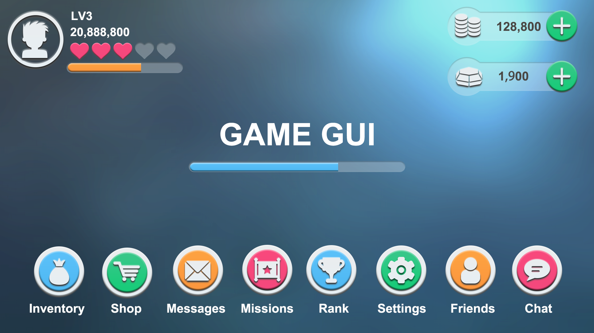
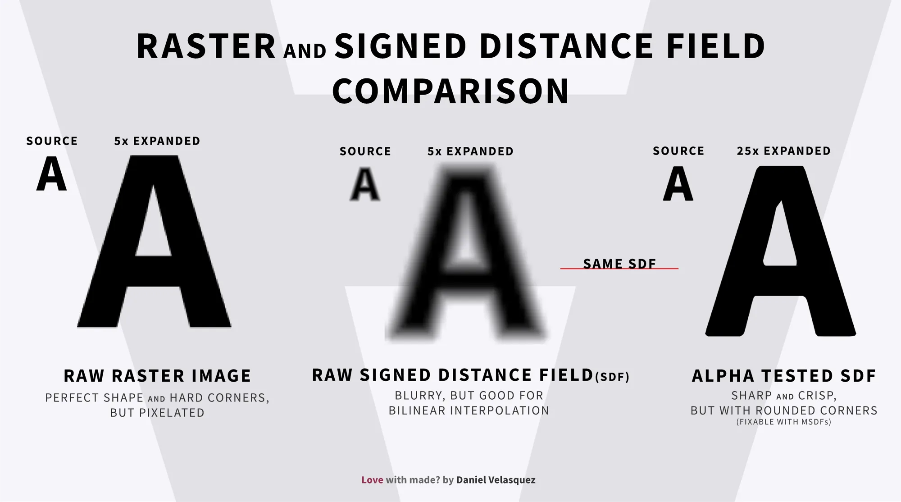
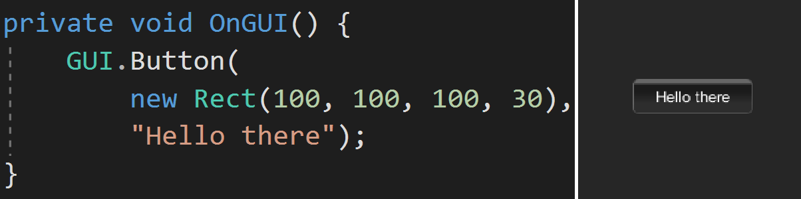
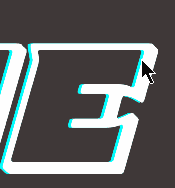
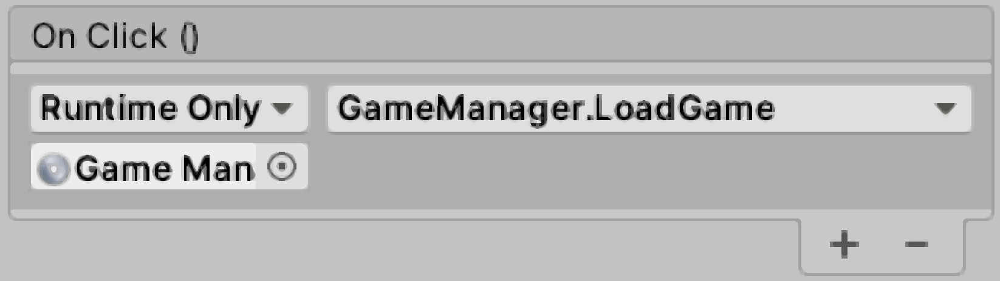

User Interface
Are we recording?

Review
What is a Waypoint Graph and what problem does it solve?
- It solves the pathfinding problem
- Vertices repsesent safe(walkable) spots and edges represent that the space between vertices is walkable
Review
What is a NavMesh?
- А collection of polygons that define what parts of the terrain are traversable by agents
Review
How is State Machine AI done in Unity?
- Integrated with the animation system
- Each state has one or more StateMachineBehaviours
- Each StateMachineBehaviour implements some AI logic with OnStateXXX methods
User Interface Definition
- Everything that lets the player interact with the game
-
By UI people generally mean GUI
(Graphical User Interface) - The most common use cases for UI are:
- Main Menu
- Options Menu
- Heads-up Display (HUD)
- Health Bar
- Inventory
UI Preview
Flat Cartoon GUI by RainbowArt
Localization and Internationalization
- Localization (l10n) is adapting the UI
for a specific language and culture (locale)
- Some languages are written right to left
- In some languages a word with more letters is shorter that a word with fewer letters
- Internationalization (i18n) is designing your UI so that l10n is easy
Fonts
- Raster fonts: every character is a 2D image
- Vector fonts:
- TrueType: straight lines and Bezier curves
- Signed Distance Field (SDF):
a pixel is treated not as intensity but as the distance
to the nearest non-black part of the character
-
The prefered way of doing fonts in Unity
(Text Mesh PRO)
-
The prefered way of doing fonts in Unity
Raster vs SDF Fonts
Source
UI in Unity
OnGUI Preview
Canvas
- The area where UI elements reside
- All UI elements are children of a canvas
- Render Modes:
- Screen Space - Overlay: renders on top of the scene
- World Space: behaves like a normal GameObject
- UI Scale Mode:
- Constant Pixel Size: elements remain a constant size
- Scale With Screen Size: the screen resizes -> the UI elements resize
Event System
- Is automatically added to the scene along with a canvas when adding any UI element to the scene
- Handles events like mouse and touch
- Can tap into it by implementing these interfaces:
- IPointerEnterHandler
- IPointerExitHandler
- IPointerClickHandler
RectTransform
- Every UI element has a RectTransform instead of a regular Transform. It has a:
- Pivot: point relative to which the element is rotated
- Anchor: points relative to which the element is positioned
UI Components
- Text
- Image
- Button
- Toggle
- Slider
- Input Field
- Panel
Text Mesh Pro
- An implementation of SDF for Unity fonts
-
To make a font into a TMP font go to:
Window/TextMeshPro/Font Asset Creator

Layout Group Components
They help organize groups of UI elements
- Horizontal Layout Group
- Vertical Layout Group
- Layout Element
UnityEvent
- Same as a regular event but visible in the Editor
- Used in UI callbacks like OnClick
- A designer can assign OnClick behaviour without writing code

UI in Code
using UnityEngine.UI;
using TMPro;
public class MenuItem : MonoBehaviour,
IPointerEnterHandler,
IPointerExitHandler,
IPointerClickHandler {
public Text regularUIText;
public TextMeshProUGUI tmpText;
public UnityEvent OnClick;
public void OnPointerEnter(PointerEventData eventData) {
tmpText.text = "...";
//...
}
public void OnPointerExit(PointerEventData eventData) {
//...
}
public void OnPointerClick(PointerEventData eventData) {
OnClick?.Invoke();
}
}